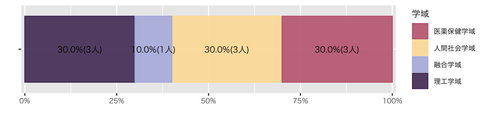

図
Code
data_list <- list(
`Q1. パソコンのスキルに自信がありますか` = df_初回アンケート %>% select(`Q1. パソコンのスキルに自信がありますか`),
`Q2. R言語を知っていますか？` = df_初回アンケート %>% select(`Q2. R言語を知っていますか？`),
`Q3. プログラム言語を使ったことはありますか` = df_初回アンケート %>% select(`Q3. プログラム言語を使ったことはありますか`)
# Q4 = df_初回アンケート_test %>% select(Q4),
# Q5 = df_初回アンケート_test %>% select(Q5)
)
# 質問票の回答選択肢を1から5に設定
levels <- factor(1:5)
# 関数の引数名を df に変更
create_bar_plot <- function(df) {
question <- names(df)[1]
ggplot(df, aes(x = factor(.data[[question]], levels = levels))) +
geom_bar(fill = "#134074FF") +
scale_x_discrete(drop = FALSE) + # データがなくてもx軸に表示
theme_gray(base_size = 10, base_family = "HiraginoSans-W3")}
# 各質問に対して棒グラフを作成
plots <- map(data_list, create_bar_plot)
# すべてのプロットを表示
for (plot in plots) {
print(plot)
}


Code
data_list <- list(
`Q4. 可視化したいデータはありますか` = df_初回アンケート %>% select(`Q4. 可視化したいデータはありますか`),
`Q5. 受講理由でもっとも近いものを選んでください` = df_初回アンケート %>% select(`Q5. 受講理由でもっとも近いものを選んでください`)
)
# 関数の引数名を df に変更
create_bar_plot <- function(df) {
question <- names(df)[1]
ggplot(df, aes(x = .data[[question]])) +
geom_bar(fill = "#134074FF") +
scale_x_discrete(drop = FALSE) + # データがなくてもx軸に表示
theme_gray(base_size = 10, base_family = "HiraginoSans-W3")}
# 各質問に対して棒グラフを作成
plots <- map(data_list, create_bar_plot)
# すべてのプロットを表示
for (plot in plots) {
print(plot)
}

Code
df_初回アンケート %>%
group_by(学域) %>%
summarise(
人数 = n()
) %>%
mutate(
比率 = 人数/sum(人数)
) %>%
ungroup() %>%
ggplot(aes(x = "", y = 人数, group = 学域)) +
geom_col(
aes(color = 学域, fill = after_scale(alpha(color, 0.9))),
position = position_fill(),
) +
geom_text(
aes(label = str_c(scales::percent(比率, accuracy = 0.1), "(", 人数, "人)")),
position = position_fill(reverse = FALSE, vjust = 0.5),
) +
scale_y_continuous(
expand = expansion(mult = c(0.01, 0.01)),
labels = scales::label_percent()) +
labs(
x = "",
y = "",
color = "学域"
) +
coord_flip() +
scale_color_paletteer_d("DresdenColor::briefcases") #配色変更
Code
df_初回アンケート %>%
group_by(学域, `Q5. 受講理由でもっとも近いものを選んでください`) %>%
summarise(
人数 = n(), .groups = "drop"
) %>%
mutate(
比率 = 人数/sum(人数)
) %>%
ungroup() %>%
ggplot(aes(x = "", y = 人数, group = 学域)) +
geom_col(
aes(color = `Q5. 受講理由でもっとも近いものを選んでください`, fill = after_scale(alpha(color, 0.9))),
position = position_fill(),
) +
geom_text(
aes(label = str_c(scales::percent(比率, accuracy = 0.1), "(", 人数, "人)")),
position = position_fill(reverse = FALSE, vjust = 0.5),
) +
scale_y_continuous(
expand = expansion(mult = c(0.01, 0.01)),
labels = scales::label_percent()) +
labs(
x = "",
y = "",
color = "Q5"
) +
coord_flip() +
facet_wrap(~ 学域) +
theme(legend.position="bottom") + #凡例を図の下に
scale_color_paletteer_d("DresdenColor::briefcases")
Code
df_初回アンケート %>%
group_by(学年) %>%
summarise(
人数 = n()
) %>%
mutate(
比率 = 人数/sum(人数)
) %>%
ungroup() %>%
ggplot(aes(x = "", y = 人数, group = 学年)) +
geom_col(
aes(color = 学年, fill = after_scale(alpha(color, 0.9))),
position = position_fill(),
) +
geom_text(
aes(label = str_c(scales::percent(比率, accuracy = 0.1), "(", 人数, "人)")),
position = position_fill(reverse = FALSE, vjust = 0.5),
) +
scale_y_continuous(
expand = expansion(mult = c(0.01, 0.01)),
labels = scales::label_percent()) +
labs(
x = "",
y = "",
color = "年次"
) +
coord_flip() +
scale_color_paletteer_d("PrettyCols::Fun")
Code
df_初回アンケート %>%
select(5:10) %>%
ggplot(aes(x = `Q1. パソコンのスキルに自信がありますか`,
y = `Q2. R言語を知っていますか？`, color = 学域)) +
geom_point() #散布図
表
単純集計
Code
df_初回アンケート %>%
select(!1:4) %>%
tbl_summary()| Characteristic | N = 161 |
|---|---|
| 学域 | |
| 医薬保健学域 | 4 (25%) |
| 人間社会学域 | 8 (50%) |
| 理工学域 | 4 (25%) |
| 学年 | |
| 1年生 | 3 (19%) |
| 2年生 | 3 (19%) |
| 3年生 | 1 (6.3%) |
| 5年生以上 | 9 (56%) |
| Q1. パソコンのスキルに自信がありますか | |
| 1 | 4 (25%) |
| 2 | 4 (25%) |
| 3 | 3 (19%) |
| 4 | 1 (6.3%) |
| 5 | 4 (25%) |
| Q2. R言語を知っていますか？ | |
| 1 | 4 (25%) |
| 2 | 8 (50%) |
| 4 | 4 (25%) |
| Q3. プログラム言語を使ったことはありますか | |
| 2 | 16 (100%) |
| Q4. 可視化したいデータはありますか | |
| ある | 3 (19%) |
| ない（見当はつく） | 3 (19%) |
| ない（見当もつかない。これから考える） | 10 (63%) |
| Q5. 受講理由でもっとも近いものを選んでください | |
| プログラム言語に興味がある | 4 (25%) |
| 研究でデータを可視化したい（具体的なデータがある） | 4 (25%) |
| 単位取得が簡単そう | 8 (50%) |
| 1 n (%) | |
クロス集計
Code
| Characteristic | 人間社会学域, N = 81 | 医薬保健学域, N = 41 | 理工学域, N = 41 | p-value2 |
|---|---|---|---|---|
| Q1. パソコンのスキルに自信がありますか | <0.001 | |||
| 1 | 4 (50%) | 0 (0%) | 0 (0%) | |
| 2 | 4 (50%) | 0 (0%) | 0 (0%) | |
| 3 | 0 (0%) | 0 (0%) | 3 (75%) | |
| 4 | 0 (0%) | 0 (0%) | 1 (25%) | |
| 5 | 0 (0%) | 4 (100%) | 0 (0%) | |
| 1 n (%) | ||||
| 2 Fisher’s exact test | ||||
Code
| Characteristic | 人間社会学域, N = 81 | 医薬保健学域, N = 41 | 理工学域, N = 41 | p-value2 |
|---|---|---|---|---|
| Q2. R言語を知っていますか？ | <0.001 | |||
| 1 | 0 (0%) | 0 (0%) | 4 (100%) | |
| 2 | 4 (50%) | 4 (100%) | 0 (0%) | |
| 4 | 4 (50%) | 0 (0%) | 0 (0%) | |
| 1 n (%) | ||||
| 2 Fisher’s exact test | ||||
Code
| Characteristic | 人間社会学域, N = 81 | 医薬保健学域, N = 41 | 理工学域, N = 41 | p-value |
|---|---|---|---|---|
| Q3. プログラム言語を使ったことはありますか | ||||
| 2 | 8 (100%) | 4 (100%) | 4 (100%) | |
| 1 n (%) | ||||
Code
| Characteristic | 人間社会学域, N = 81 | 医薬保健学域, N = 41 | 理工学域, N = 41 | p-value2 |
|---|---|---|---|---|
| Q4. 可視化したいデータはありますか | >0.9 | |||
| ある | 1 (13%) | 1 (25%) | 1 (25%) | |
| ない（見当はつく） | 1 (13%) | 1 (25%) | 1 (25%) | |
| ない（見当もつかない。これから考える） | 6 (75%) | 2 (50%) | 2 (50%) | |
| 1 n (%) | ||||
| 2 Fisher’s exact test | ||||
Copyright
苅谷千尋